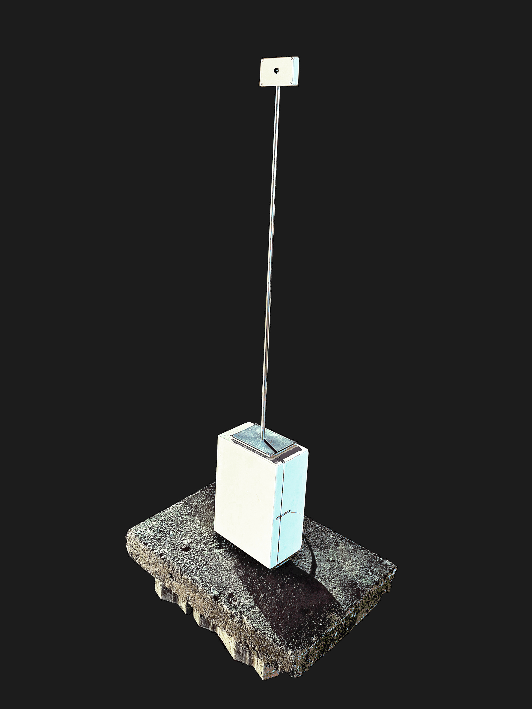
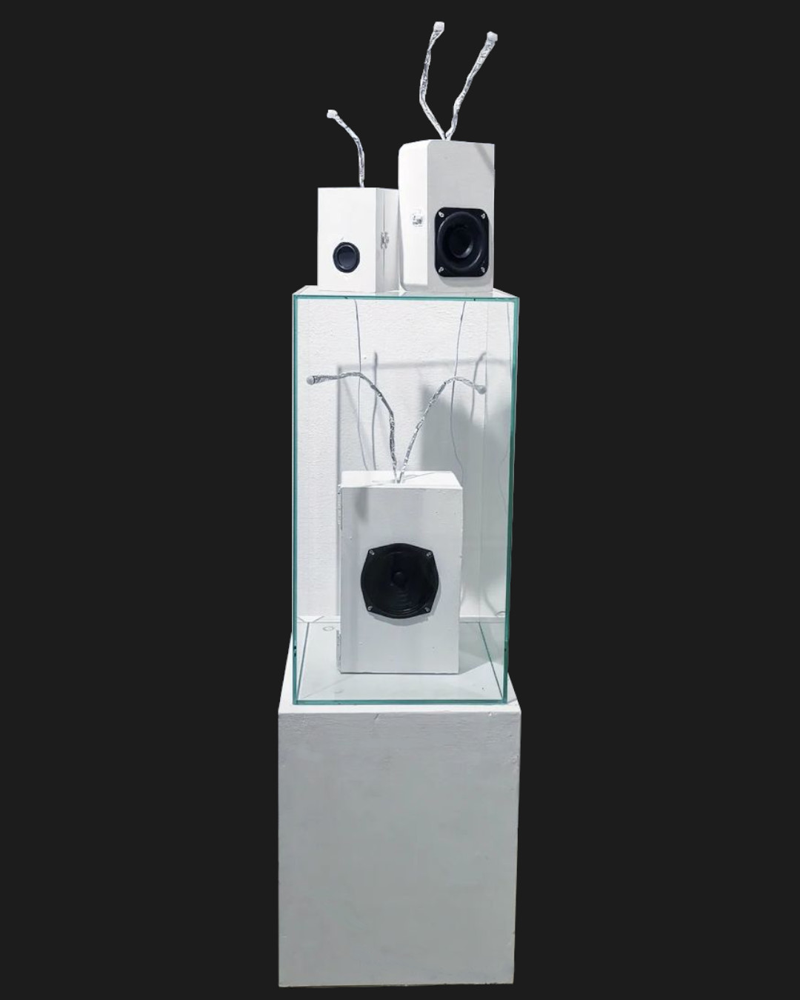

for processed recoring / solo instrument / ensemble
CUBED²
Artist
ISABELLA SKY
Artist
UNRECOGNIZED
Documentary movie
KLAVÍR
Short movie
CUBED²
Release Date: 2024
Music production and composition by B.A.K. aka. CUBED²
ISABELLA SKY
Release Date: 20.10.2023
Music production and composition by B.A.K. aka. Captain Candy II
UNRECOGNIZED
The untold story of Somaliland
Documentary Movie, 2019
Original music production and composition by B.A.K.
KLAVÍR
Short Movie, 2017
Original music production and composition by B.A.K.
LEXIKON IN 4 STÜCKEN
Multimedia-Performance
PROXIMITY BOX
Sculpture / Sound-Installation
VOID BOX SERIES
Sculpture / Sound-Installation
SMOKING IS DEADLY
Sculpture / Sound-Installation
LEXIKON IN 4 STÜCKEN
Graphical notations and artistic concept: Julia Lackner
Performance @ Club Hybrid, Graz, Austria, 2.9.2023
Discription:
"Lexicon in Four Pieces" is an artistic project by Julia Lackner, that represents a symbiosis of visual and sound art, transcending the boundaries of conventional forms of expression. In this endeavor, Lackner unfolds a novel interpretation of Meyer's "Kleines Lexikon Musik" by transforming it into a unique visual and auditory experience.
In this performance, the synergistic spectacle of Julia Lackner's "Lexicon in Four Pieces," was unveiled, where visual art transmutes into an auditory canvas. Four avant-garde composers, each with a distinct auditory palette, converge to interpret Lackner's quartet of graphic notations.
Each composer dives into Lackner's pictorial representations, embarking on an exploratory journey through the abstract landscapes of forms and shapes. Their mission: to unite four individual interpretations into a cohesive musical narrative, reimagining the lexicon as a singular, harmonious composition.
The creative groundwork for this interpretation, laid by Benjamin Alan Kubaczek, resonates through the performance, as he, along with his three colleagues, adheres to an underlying set of interpretive principles. These guidelines shape the flow and interaction of the ensemble, ensuring that the visual stimuli are not just translated, but conversed with, in the language of sound.
At the heart of the vernissage for "Lexicon in Four Pieces," an interface designed with Martin Simpson's expertise offered an interactive experience. This tool allowed visitors to adjust the amplitude of the sound for each graphical notation, providing a hands-on way to personalize the auditory mix of the installation. With the ability to mute individual elements, attendees could isolate and delve into a single graphical notation's interpretation, fostering a unique and intimate exploration of my interpretation of Julia Lackner's work.
PROXIMITY BOX
Sculpture / Sound-Installation
presented at Club Hybrid, Graz, 2023

Discription:
The "PROXIMITY BOX" is an interactive sound art installation that explores the intersection of space and sound. Mounted on a 360-degree rotating stepper motor, the piece features a sensor that measures distances by scanning the surrounding area. These measured distances are then translated into MIDI signals, which are processed through filters in the SuperCollider audio environment. The filtering mechanism is responsive to the spatial data: closer objects result in higher audible frequencies, while objects that are farther away produce lower frequencies. The intent behind this piece is to create a dynamic sonic scanner that interprets architectural and environmental features as musical elements, allowing for an immersive and interactive auditory experience. This image showcases the device, focusing on the white box with a long rod extending from it, which houses the sensor at its end.
VOID BOX SERIES
Sculpture / Sound-Installation
presented at HOCHSommer Fesival, Zollamt, Bad Radkersburg 2023
presented at MUMUTH, Graz, 2023

Discription:
The "VOID BOX SERIES", encompassing mk I, mk II, and mk III, is an evolving installative composition that responds dynamically to the presence of its audience. Utilizing a sensor to detect movement, each box activates an increase in amplitude of sounds previously inaudible, making the surrounding space an interactive canvas for an auditory experience. These iterations share a core principle: they invite the audience to influence the form and dynamics of the composition, ensuring that each encounter with the Void Box is as unique as the ever-changing environment in which it resides.
SMOKING IS DEADLY
Sculpture / Sound-Installation
presented at HOCHSommer Fesival, Zollamt, Bad Radkersburg 2023
collaboration with MAX REINER
Discription:
"SMOKING IS DEADLY" is a poignant environmental sculpture that harnesses the subtle electrical signals from tree leaves to trigger a chorus of coughing sounds. By translating the natural biofeedback of a tree into a human response to irritation, this work starkly highlights the pervasive and often overlooked impact of smoking. It serves as a metaphor for the interconnectedness of health within ecosystems, suggesting that the effects of smoke extend far beyond individual consequences, ultimately compromising the well-being of our natural surroundings. This artwork not only functions as a cautionary tale but also as a compelling reminder that the act of smoking casts a shadow on the vitality of the environment, echoing its distress through the very leaves that struggle to breathe in a smoke-filled world.
Impressum:
Benjamin Alan Kubaczek,
Wiener Straße 53, Graz, 8020,
bak@bak.media